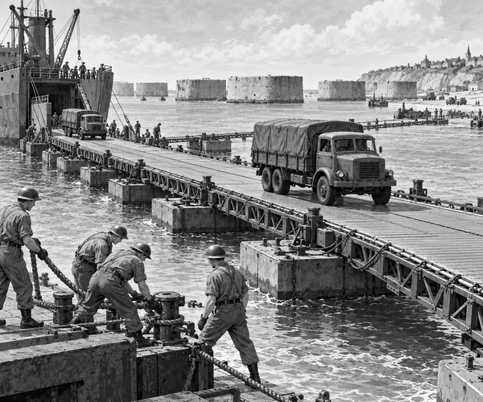

FACT
It was June 1944, during World War Two.
Allied troops had landed on the beaches of Normandy in France.
Now they needed food, fuel, tools and trucks.
They needed lots of them.
Cargo ships could carry the supplies across the sea.
But ships could not drive onto a beach.
They needed a safe harbour with walls and docks.
The large ports were not ready to use.
So British engineers made a bold plan.
They would take their own harbour with them.
It was called a Mulberry harbour.
One whole harbour would have been far too big to move.
Instead, workers built it in many parts.
Some parts were made from steel.
Others were made from concrete.
Tugboats pulled the parts across the English Channel.
It was like towing a giant building set over the sea.
First, the teams needed to calm the waves.
They sank old ships in a long line.
They also placed huge concrete boxes in the water.
These boxes were called Phoenix caissons.
Together, they formed breakwaters.
The breakwaters stood between the harbour and the rough sea.
Harbour fact: A breakwater is a wall in the water. It breaks the force of waves and makes the water behind it calmer.
Next came the roads.
Ships had to unload far from the sand.
So engineers joined long metal road sections together.
The roads stretched from the ships to the shore.
The road sections had a code name: Whales.
Box-shaped pontoons held them above the water.
The pontoons had another code name: Beetles.
Whales on Beetles made a floating road.
The clever road could bend a little.
It moved up and down with the tide.
At last, a ship lowered its ramp.
A loaded lorry rolled onto the metal road.
Clank. Rumble. Clank.
The road bobbed, but it held firm.
The lorry drove all the way to the beach.
Then another lorry followed.
And another.
Crates, fuel and vehicles moved ashore.
Big-build fact: Two Mulberry harbours were made. A fierce storm badly damaged one, but the harbour at Arromanches kept working for about ten months.
The Mulberry harbour was not a ship.
It was not an ordinary bridge.
It was a whole working port, built in pieces.
Thousands of people had drawn plans, poured concrete and shaped steel.
Tug crews had pulled the parts through the waves.
Engineers and sailors had fitted them together.
Each small job became part of one enormous job.
On the floating roads of Normandy, clever ideas carried a very heavy load.
1. Why were the Mulberry harbours needed?
2. What held up the Whale roads?
3. What helped make the water calmer?